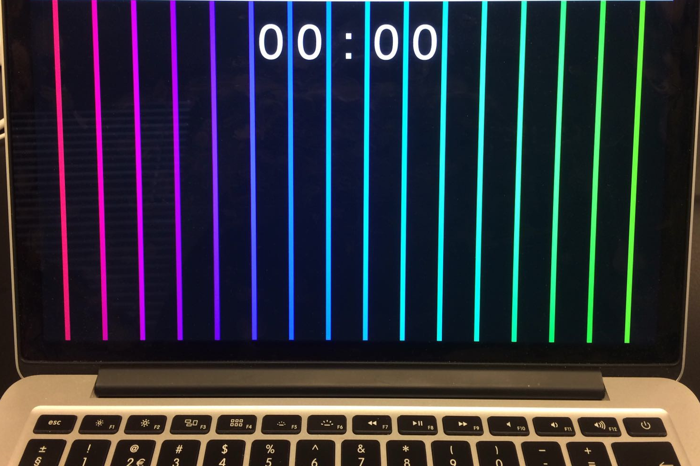
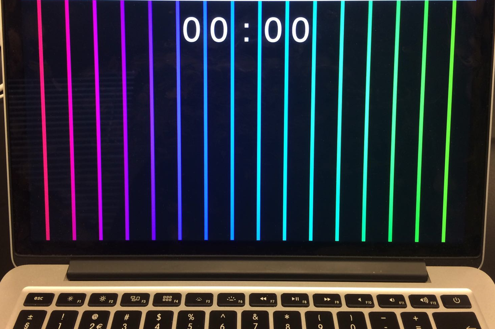

Door middel van de prachtige Leap motion technieken hebben wij van Play the Bridge dit prachtig stukje techniek gebouwt.
U vraagt zich vast af: Wat is dit en hoe werkt het?
Nou wij maken gebruik van de leap motion, waardoor het apparaat uw handen registreerd en hierdoor uw handen virtueel op het beeldscherm zet.
Doordat we dit kunnen doen, kunt u uw handen in de lucht laten bewegen en dit zorgt ervoor dat u de harp kan bespelen zonder iets aan te raken!
De harp wordt dan bespeeld met noten die te horen zijn. Deze losse noten zijn gekoppeld aan de "Snaren" van de Erasmusbrug in Rotterdam.
Dus bij elke noot die u speelt op de leap motion zal de kleur snaar van de erasmusbrug gaan gloeien.
U kunt uw gemaakte muziek na het spelen opslaan en delen. Hierdoor kunt u uw eigen gemaakte harpmuziek later terugbeluisteren.